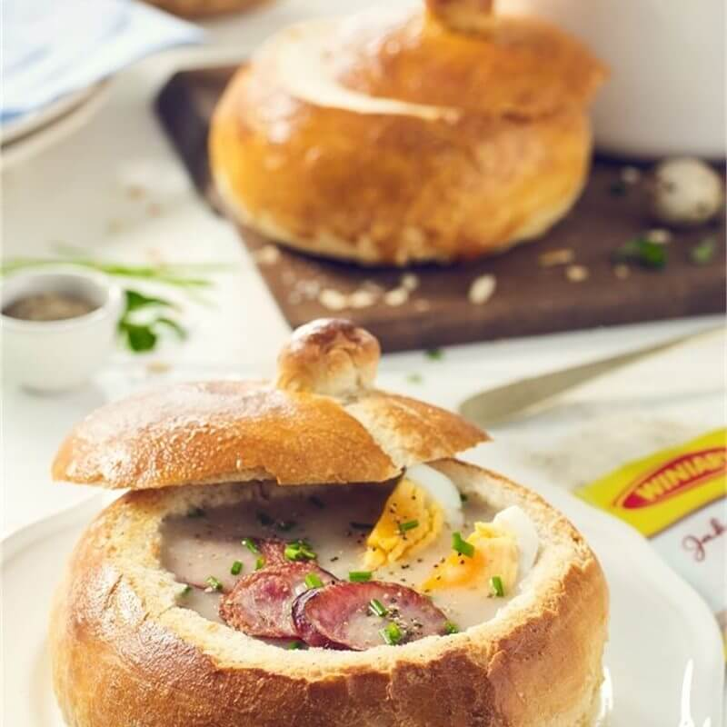

Foods
Jajka w majonezie
Jajka w majonezie thường xuất hiện trong lễ phục sinh nhưng cũng trong giao thừa, Giáng
sinh và năm mới!.
Jajka w majonezie chỉ được phục vụ như một món khai vị.
Khi ăn với gia đình, tôi ăn nó với "śledzie w oleju" - trộn lại rất là ngon. Tôi thích
cho lá hẹ vào cuối giai đoạn nấu nó :)
Thành phần:
- 6 quả trứng luộc
- 300g nấm
- 1/2 củ hành tây
- 1 thìa dầu
- 1 thìa bơ
- 1/2 mớ rau mùi tây
- Muối và tiêu đen
- Mayonnaise 150ml
- Trứng luộc chín, đổ nước lạnh vào, đập dập vỏ và để sang một bên để nguội (nếu cần bạn có thể thay nước lạnh hơn).
- Bóc vỏ, cắt dọc trứng thành hai nửa.
- Lấy lòng đỏ từ trứng ra bát và dùng nĩa đánh tan.
- Nấm rửa sạch và để thật khô rồi cắt thành từng lát
- Hành tây thái nhỏ
- Cho hành tây vào chảo tráng men sau đó cho bơ và nấm vào xào cùng cho đến khi chuyển sang màu vàng thì cho ít muối và tiêu đen vào.
- Vớt nấm và hành tây ra khỏi chảo, để qua một bên cho nguội rồi nghiền nhuyễn với mùi tây.
- Cuối cùng, trộn chúng với lòng đỏ trứng, cho muối và hạt tiêu đen và trộn với 2 ~ 3 thìa mayonnaise.
- Nhồi và ấn tất cả vào lòng trắng trứng
- Bày xuống đĩa, thêm chút mayonnaise, trang trí với mùi tây và cùng thưởng thức thôi nào!
- Smacznego!
Công thức từ www.kwestiasmaku.com
Ảnh từ www.kwestiasmaku.com
Żurek
Żurek là một món súp truyền thông Ba Lan!
Hương vị và phương pháp phục vụ độc đáo nhất!
Theo truyền thống, chúng tôi phục vụ súp bên trong bánh mì! Giống như bạn có thể thấy
trên hình ảnh :)
Thành phần:
8,5 chén (2 lít, 0,5 gallon) thịt kho (gà, thịt trộn, rosół cũng rất tuyệt)
7 oz (200g) thịt xông khói không cắt lát
1 (200g, 7 oz) hành tây trắng vừa
2 ủ cà rốt vừa (khoảng 4.2 oz, 120g)
2 rễ mùi tây (khoảng 4.2 oz, 120g) - có thể được thay thế bằng rễ cần tây)
4 mắt xích (500g, 1.1 lb) xúc xích kiełbasa trắng (tươi, chưa nấu chín)
2 ¼ cốc (500ml) Bột lúa mạch đen (công thức trong phần ghi chú)
1 tép tỏi
3 muỗng canh kem whipping (optional, 30-36% fat)
1 muỗng canh kinh giới khô
Muối để thêm đậm đà
Hạt tiêu (mới xay) để thêm đậm đà
NẾU BẠN MUỐN TỰ LÀM 'ZAKWAS':
4 lá nguyệt quế
5 hạt tiêu Jamaica
5 hạt tiêu đen
PHỤC VỤ:
4 quả trứng luộc thái đôi
Kinh giới tươi để trang trí
HƯỚNG DẪN:
- Lấy một cái nồi đun. Đổ nước kho vào và bắt đầu hâm nóng (lửa vừa).
- Cắt thịt xông khói và hành tây thành miếng nhỏ. Dùng chảo để chiên thịt xông khói trước. Bạn không cần thêm dầu ăn vào, vì thịt xông khói sẽ tiết ra mỡ của nó.
- Khi mỡ thịt xông khói đã sánh lại, thêm hành tây vào và tiếp tục chiên cho đến khi cả hai nguyên liệu chuyển sang màu vàng.
- Cho các nguyên liệu trên vào nồi đang nấu. Nếu món khai vị ‘zakwas’ của bạn lên men mà không có gia vị (lá nguyệt quế, quả mọng và hạt tiêu), thì đây là thời điểm tốt để thêm chúng trực tiếp vào súp. Tôi thường đặt gia vị bên trong túi gia vị lưới / gói dự trữ, để sau tôi không phải vất vả vớt chúng.
- Gọt vỏ cà rốt và rễ mùi tây, thả cả quả vào kho.
- Thêm kiełbasa trắng (chưa cắt, nguyên cả mắt xích) vào và tiếp tục nấu trong vòng 30 - 40 phút, cho đến khi nước kho trở nên có mùi thơm và hương vị (bạn sẽ phải nhờ ai đó nếm thử).
- Nếu bạn chưa luộc trứng, đây là thời điểm tốt nhất để bạn làm điều đó. Sau khi nấu chín, hãy để một lúc cho trứng nguội bớt..
- Bước tiếp theo sẽ là loại bỏ gia vị. Nếu bạn sử dụng túi lưới gia vị, bạn chỉ cần lấy nó ra. Nếu không, bạn có thể vớt tay bằng thìa hoặc loại bỏ chúng bằng cách sử dụng một cái rây - và cho súp vào nồi..
- Bây giờ đã đến lúc thêm món khai vị 'zakwas'. Thêm 1⅓ cốc (300ml) zakwas để có vị chua nhẹ, tối đa 2 cốc (hoặc hơn; khoảng 500ml) để có vị chua hơn. Nếu bạn không chắc mình nên thêm bao nhiêu, chỉ cần đổ dần dần và nếm thử.
- Có hai cách để làm điều đó:
• Trộn bột trong lọ / chai, sao cho phần chất lỏng hòa quyện với phần bột, • Hoặc bắt đầu bằng cách đổ nước lên trên với phần bột bùn - từng thìa một cho đến khi bạn đạt được độ đặc mong muốn. Đó là cách tôi làm. - Thêm 1 muỗng canh kinh giới khô và một tép tỏi (đập dập hoặc băm nhỏ), nấu thêm 4-5 phút.
- Tắt bếp. Dùng thìa có rãnh để lấy xúc xích và rau củ, cắt lát tất cả và trở lại nồi. Bạn cũng có thể để xúc xích không thái lát - điều đó tùy thuộc vào bạn.
- Thêm kem là tùy chọn của bạn, nhưng nó cân bằng hương vị rất độc đáo. Cho 3 thìa kem tươi vào cốc hoặc bát nhỏ. Thêm một muỗng canh Żurek, dùng nĩa trộn đều. Và một thìa súp khác và trộn một lần nữa. Lặp lại với 2 muỗng canh Żurek nữa. Đổ hỗn hợp vào nồi.
- Giờ nó đã có một hương vị tuyệt vời. Có cần thêm muối hay chút tiêu không? Nếu bạn muốn, hãy thêm một ít cho vừa miệng. Trang trí với rau kinh giới tươi hoặc ngò tây cắt nhỏ và dùng với nửa quả trứng luộc.
- Smacznego!
Công thức từ kissmeimpolish
Ảnh từ Winiary.pl
Schabowy z ziemniakami

Món ăn này thực sự quan trọng đối với mỗi người Ba Lan! Nó được ăn hàng tuần / cuối tuần như một món ăn chính. Thường thì chúng tôi ăn món rosół và sau đó là món schabowy z ziemniakami! Lưu ý! Ở Ba Lan, chúng tôi gọi nó là "drugie danie", trong tiếng Anh nó có nghĩa đen là "Món ăn thứ hai".
Nguyên liệu:| Cơ bản: | Mizeria: |
| Thịt lợn băm | Dưa chuột(0,5-1kg) |
|---|---|
| Khoai tây non (3-4 pieces) | Kem chua(1-2 pieces) |
| Muối biển | Muối biển |
| Rau thì là | |
| Trứng | |
| Vụn bánh mỳ |
- Dùng chày nghiền kỹ thịt băm, thỉnh thoảng đảo đều. Độ dày của cốt lết phải khoảng 5 mm. Rắc thịt với muối và tiêu và để riêng. Đập trứng vào một đĩa sâu. Đổ bột mì vào đĩa thứ hai và vụn bánh mì vào đĩa thứ ba.
- Nhúng thịt vào bột mì, sau đó nhúng vào trứng và cuối cùng phủ lên vụn bánh mì. Hãy nhớ giũ bỏ phần bột thừa. Đun nóng dầu trong chảo lớn rồi cho thịt đã lăn bột vào mỡ nóng. Chiên cho đến khi có màu vàng nâu trên lửa nhỏ.
- Thêm nữa! Mizeria! Dưa chuột rửa sạch, gọt vỏ và cắt thành từng lát mỏng. Cho dưa chuột đã thái vào tô, thêm kem và bì thái nhỏ vào. Nêm với muối và hạt tiêu. Tất cả trộn đều và cho vào tủ lạnh khoảng 15 phút.
- Smacznego! Xong rôi! Bạn có thể nếm thử món chính truyền thống nhất của Ba Lan :)
Công thức và ảnh từ doradcasmaku.pl
Sernik królewski

Sernik có truyền thống thực sự lâu đời và đó là một trong những loại bánh truyền thống ở
Ba Lan.
Và là một trong những loại bánh ngon nhất từ Ba Lan ~
| Cho phần bột | Cho phần nhân |
|---|---|
| 200g bột mì | 2 thìa bơ (thìa canh), đã được làm chảy |
| 100g bơ đã làm chảy | 3 quả trứng tách lòng đỏ và trắng |
| 100g đường bột | 6 thìa canh đường bột |
| 3 thìa canh bột ca cao không đường | 1 thìa canh đường vani |
| 1 quả trứng | 500g phô mai trắng (twarog) hoặc quark |
| 1 thìa cà phê bột nở | 1 thìa canh bột khoai tây |
| vụn bánh mì |
Chuẩn bị:20 phút › Nấu: 1 giờ › Sẵn sàng:1giờ 20 phút
- Cho bột mì, bơ, đường cát, ca cao, trứng và bột nở vào tô. Trộn cho đến khi tất cả đồng đều. Chia thành hai phần bằng nhau.
- Cho bơ xuống đáy khay làm bánh tròn 22cm và rắc vụn bánh mì lên. Chuyển một phần hỗn hợp vào hộp thiếc và ấn đều xuống đáy. Bọc phần còn lại trong màng bám và cho vào tủ lạnh
- Làm nóng lò ở 180 C / Gas 4.
- Với phần nhân, đánh đều bơ, lòng đỏ trứng, đường và vani. Trộn cho đến khi đều và đường tan. Tiếp tục trộn và từ từ thêm twarog. Cuối cùng, thêm bột khoai tây và khuấy cho đến chúng đều.
- Đánh lòng trắng trứng cho đến khi bông cứng và cho vào hỗn hợp twarog. Đổ vào khay bánh.
- Băm nhỏ hoặc nhúm nhỏ miếng bột trong tủ lạnh và rắc đều lên nhân bánh.
- Nướng bánh khoảng 1 giờ trong lò đã làm sẵn từ trước.
Công thức từ allrecipes.co.uk
Ảnh từ Winiary.pl
Pierogi

Món ăn nổi tiếng nhất Ba Lan là Pierogi.
Pierogi giống như bánh bột nhồi của người Ba Lan, có nhiều loại nhân và cách nấu, và
được người Ba Lan coi là món ăn tự nấu quen thuộc.
Các thành phần tiêu chuẩn là thịt, nấm, bắp cải, dưa cải bắp, pho mát, v.v.
nhưng vào mùa hè, bạn cũng có thể ăn Piergoi làm từ trái cây như dâu tây, mâm xôi và kem
chua như một món tráng miệng.
Giới thiệu “Pierogi ruskie”, một loại bánh pierogi làm từ khoai tây, là thực phẩm chủ
yếu của người Ba Lan. Trong lễ Giáng sinh người Ba Lan thường ăn chúng với bắp cải và
nấm!
Ảnh và công thức Pierogi từ @Saki
Nguyên liệu: (Cho 20 cái)
[Bột]
40ml nước
160g bột mì
1/2 thìa cà phê muối
1 quả trứng
2 củ khoai tây 1/2 củ hành tây đã cắt Phô mai để thêm đậm đà Dâu ô liu Muối và hạt tiêu Húng quế để trang trí
Cách làm:- Đánh tan trứng, cho bột mì và muối vào tô, thêm nước và trứng vào trộn đều cho đến khi quyện lại với nhau. Lưu ý không nhào kỹ quá.
- Dùng màng bọc thực phẩm bọc lại và để bột nghỉ ở nhiệt độ phòng khoảng 30 phút.
- Trong khi để bột nghỉ, chúng ta hãy cùng làm phần nhân nhé
- Khoai tây cắt miếng nhỏ, cho vào nước sôi chần qua với muối.
- Trong khi nấu khoai tây, cắt nhỏ hành tây. (Một nửa để làm nhân và một nửa còn lại sẽ được nướng sau để làm lớp phủ, vì vậy bạn hãy chia chúng trước.)
- Khi khoai tây mềm, chắt bớt nước, cho vào bát và tán nhuyễn.
- Thêm hành tây, pho mát, muối và hạt tiêu vào khoai tây nghiền.
- Dàn mỏng bột trên bàn (đã phủ 1 lớp bột mì mỏng) và nặn thành hình tròn.
- Cho nhân vào giữa miếng bột đã vo tròn, cho ít nước vào bên trong phần nhân còn lại rồi gói lại.
- Sau khi gói, dùng nĩa tạo hình xung quanh mép của bánh. Trong lúc đó, bạn cũng có thể đun sôi nước nóng trong nồi để chuẩn bị luộc bánh.
- Cho pierogi vào nước sôi và luộc chín.
- Bánh sẽ nổi lên sau một thời gian, vì vậy hãy đun sôi khoảng 4-5 phút sau khi chúng nổi lên.
- Trong khi đun sôi, chiên phần hành còn lại trong dầu ô liu cho đến khi chúng có màu thì nêm muối và tiêu.
- Khi pierogi sôi, để ráo nước và bày chúng ra đĩa.
- Cho hành tây chiên và dầu ô liu lên bánh pierogi và phủ 1 lớp húng quế.
- Smacznego!! Hãy thưởng thức Pierogi của bạn. ^^
Gołąbki(Bắp cải cuộn)
Gołąbki là món bắp cải cuộn kiểu Ba Lan.
Cách nấu điển hình nhất của món ăn này là lá cải bắp được cuộn lại và nhồi với thịt vai
lợn băm nhỏ cùng gạo. Nó được
nấu với nước sốt cà chua hoặc cà chua xay nhuyễn. Thường ở nhà,
chúng ta luộc toàn bộ bắp cải và nấu chín. Đối với lần này, chúng tôi sẽ giới thiệu công
thức của lá bỏ vỏ.
Gołąbki và ảnh được làm bởi @Saki
Nguyên liệu (cho 8 cuộn)
8 lá bắp cải
1/2 củ hành tây cắt nhỏ
Thịt lợn xay 300g
Gạo 100g (đã nấu)
1 lọ nước sốt cà chua
Một ít muối
Một ít hạt tiêu
1 muỗng canh sữa chua
Mùi tây để phủ lên trên
Cách làm:
- Cắt bỏ lõi lá bắp cải và luộc trong nước sôi khoảng 1-2 phút. Lúc này mới luộc lá cùng.
- Sau khi đun sôi, để ráo nước và để nguội.
- Sau khi nguội, bạn cạo bỏ phần cứng của bắp cải và cắt nhuyễn phần cứng và lõi.
- Hành tây băm nhuyễn và chiên trong dầu cho đến khi trong
- Trộn thịt lợn băm, cơm và hành tây chiên và nêm muối tiêu.
- Bọc hỗn hơp vừa trộn trong bắp cải.
- Trải bắp cải đã thái nhỏ vào chảo và đặt bắp cải đã gói lên trên.
- Đậy chảo lại với nước sốt cà chua và đun nhỏ lửa trong 20-30 phút.
- Thêm sữa chua và đun nhỏ lửa thêm 2-3 phút.
- Cho bắp cải đã cuốn, nước sốt và mùi tây ra đĩa.
- Smacznego :)
Naleśniki(Bánh kếp)
Naleśnik là một loại bánh kếp của Ba Lan. Nhìn giống bánh crepe nhưng bột dày hơn một chút, người ta thường dùng để cuốn với mứt, hoa quả hoặc phô mai để ăn. Vì bột không quá ngọt, nó có thể được ăn như một loại bữa ăn cũng như một loại tráng miệng. Thời điểm thích hợp nhất để ăn là sau khi đã phủ kem chua và đường lên bánh.
Thành phần:1 cốc bột mì
2 quả trứng
1 ly sữa
3/4 cốc nước (tốt nhất là nước có ga)
1 can of tomato sauce
Một chút muối
3 thìa bơ hoặc dầu thực vật
- Cho tất cả các nguyên liệu vào tô trộn đều để tránh bị vón cục làm nhão.
- Đổ bột vào chảo có tráng một lớp dầu mỏng với trên lửa nhỏ.
- Nướng cả hai mặt cho đến khi có màu vàng nhạt
- Rắc bột bánh yêu thích của bạn với mứt, trái cây, phô mai kem và đường rồi bọc lại.
- Smacznego :)
Hình ảnh và công thức được làm bởi @Saki
*Lưu ý: nếu cho phô mai bạn cần chiên 2 lần, để phô mai trắng cho ít đường cát, đường vani và 1 quả trứng vào trộn đều